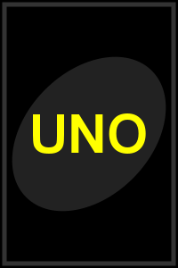

基本規則
UNO是一款風靡全球的卡牌遊戲，適合2-10人遊玩。遊戲目標是最先出完手中所有卡牌。

每位玩家初始獲得7張牌，遊戲順時針進行。玩家需出與棄牌堆頂部卡牌顏色或數字/符號相同的卡牌。
卡牌種類
UNO牌組共108張卡牌，包括：
- 數字牌(0-9)：每種顏色各有19張
- 功能牌：每種顏色各有2張「跳過」、「反轉」和「+2」牌
- 特殊牌：4張「換色」牌和4張「+4換色」牌
功能牌效果
- 跳過(⊘)：下一位玩家喪失本回合出牌機會
- 反轉(⟲)：遊戲進行方向反轉
- +2：下一位玩家必須抽2張牌並喪失本回合出牌機會
- 換色(🌈)：出牌者可以選擇下一張牌的顏色
- +4換色：下一位玩家必須抽4張牌，並由出牌者選擇下一張牌的顏色
UNO規則
當玩家只剩一張牌時，必須點擊"UNO!"按鈕，否則會被罰抽2張牌。
這是遊戲中的關鍵策略點，記得時刻關注其他玩家的手牌數量！
遊戲操作
- 點擊您手中的卡牌來出牌
- 點擊牌組來抽牌
- 當您只剩一張牌時，點擊"UNO!"按鈕
- 出換色牌時，選擇您想要的顏色
- 使用"重新開始"按鈕可以隨時重新開始遊戲
現在您已經了解了UNO的基本規則，準備好開始遊戲了嗎？